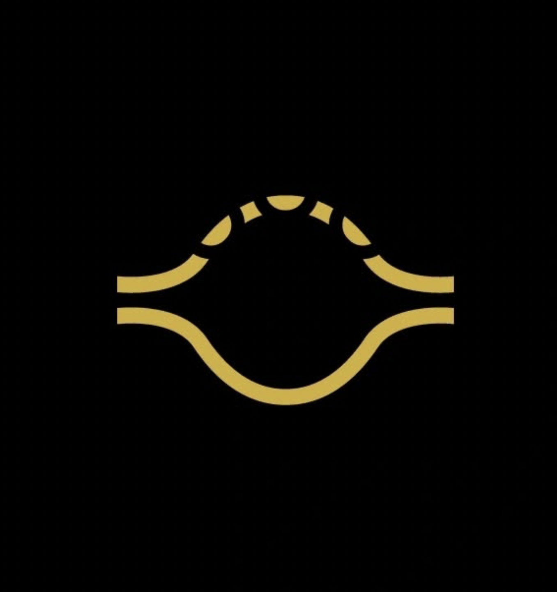

QUINA.HANDPANEl taller se encuentra en el partido de Tres de Febrero, Buenos Aires, zona oeste del Gran Buenos Aires. Al coordinar la visita por WhatsApp, vas a recibir la dirección exacta y la ubicación por Google Maps.
Una vez que tengas turno confirmado, vas a recibir el link exacto de la ubicación para llegar sin problemas.
Según desde dónde vengas, podés combinar tren, colectivos o auto. Acá tenés una guía general para orientarte antes de recibir la dirección exacta por WhatsApp.
Una de las formas más cómodas de llegar a Tres de Febrero es con el tren Urquiza.
Podés viajar en la línea Urquiza desde Chacarita hacia zona oeste y bajar en alguna estación de Tres de Febrero (por ejemplo, estaciones del tramo intermedio). La estación exacta se coordina cuando se comparta la ubicación puntual del taller.
Varios recorridos de colectivo pasan por Tres de Febrero y alrededores. Algunos que suelen acercarte a la zona son:
Lo ideal es chequear en Google Maps (o app de transporte) cuál combinación te deja más cerca según tu punto de partida.
Si venís en auto, Tres de Febrero se conecta fácilmente desde:
Al recibir el link exacto de Google Maps, podés seguir el GPS sin problema y calcular tiempos de viaje y tráfico.
Como es un taller y no un local a la calle, las visitas se coordinan siempre antes por WhatsApp. Así se comparte: